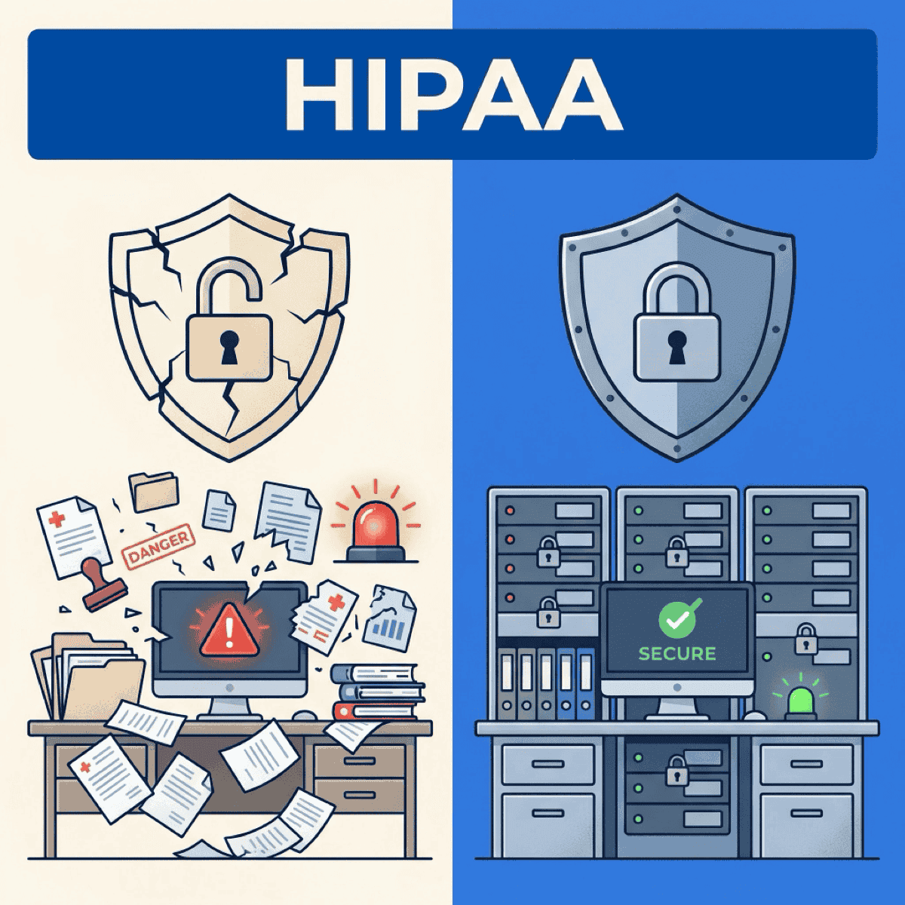

The HIPAA update nobody’s ready for

TL;DR
- The HIPAA Security Rule is getting its biggest overhaul in decades — encryption, MFA, and network segmentation become mandatory, not “addressable”
- Healthcare breaches cost $7.42M on average — compliance investment of $30K–$120K/year is a rounding error by comparison
- The final rule is expected May 2026 with a 240-day compliance window — start your gap analysis now
- Cloud platforms help but don’t solve everything — shared responsibility means you still own access controls and documentation
Healthcare data breaches are the most expensive in any industry. At $7.42 million per incident — and $408 per stolen record — the cost of a single breach dwarfs what most mid-market companies spend on their entire IT budget. Healthcare has held the top spot for 14 consecutive years.
And the regulatory landscape is about to get a lot more demanding.
The HHS published a Notice of Proposed Rulemaking in January 2025 that rewrites the HIPAA Security Rule. The final rule is on track for May 2026, and it eliminates the single biggest compliance loophole in healthcare: the distinction between “addressable” and “required” safeguards.
If you’re running a healthcare company between $5M and $500M in revenue, this affects you directly. Here’s what’s changing, what it actually costs to comply, and the 90-day playbook to get ready.
The five big shifts every CEO needs to know
1. “Addressable” is dead
This is the biggest philosophical change. Under the current rule, some safeguards are “required” and others are “addressable.” In practice, many organizations treated “addressable” as optional — documenting why they chose not to implement a control rather than implementing it.
HHS noticed. The NPRM eliminates the distinction entirely. Everything becomes required, with only specific, limited exceptions.
If your last compliance audit relied on “addressable” carve-outs for encryption or access controls, your gap analysis is now invalid.
I’ve seen this firsthand with mid-market healthcare clients. They pass an audit under the current rule, feel good about their compliance posture, and don’t realize the ground has shifted underneath them. The organizations that treated “addressable” honestly are in decent shape. The ones that used it as an escape hatch have the most work ahead.
2. Encryption everywhere — no exceptions
All electronic protected health information (ePHI) must be encrypted at rest AND in transit. No exceptions. Mobile devices must fully comply with technical safeguards before use.
This catches a lot of mid-market organizations. Many encrypt data in transit but not at rest — or vice versa. The new rule requires both, everywhere, including laptops, tablets, and phones that touch patient data.
3. MFA for everything that touches ePHI
Multi-factor authentication becomes mandatory for all IT systems containing ePHI. Additional MFA is required for any action that changes user privileges or PHI access levels.
This matters because compromised credentials remain the leading attack vector in healthcare breaches. MFA directly addresses the most common way attackers get in.
Limited exceptions exist only for legacy systems and pre-March 2023 FDA-approved medical devices — and those require documented transition plans.
4. Network segmentation is mandatory
Flat networks are no longer acceptable. Systems containing ePHI must be segmented from the general network.
The compliance investment is a rounding error compared to a single breach. The question isn’t whether you can afford to comply — it’s whether you can afford not to.
— Clarke Bishop
For organizations running everything on one network, this is the most expensive infrastructure change in the new rule. But it’s also the one that most reduces your blast radius when — not if — an attacker gets in.
5. Risk analysis gets prescriptive
The days of checkbox compliance are over. The new rule requires comprehensive, documented, ongoing risk assessments with specific requirements for what your risk analysis must include.
You can’t hand a consultant a checklist and call it done. Your risk analysis needs to be a living document that reflects your actual environment — one that gets updated when you add new systems, change vendors, or modify how ePHI flows through your organization.
The math that makes this urgent
Let’s put the numbers side by side.
The cost of a breach:
- $7.42 million average healthcare breach cost — highest of any industry for 14 consecutive years
- $408 per record — more than 3x the cross-industry average
- Healthcare cyberattacks costing over $200K quadrupled in a single year
- Nearly half of breached organizations raise patient prices to cover breach costs
The cost of compliance:
- $30K–$120K per year ongoing for mid-size organizations
- $25K–$75K for initial implementation
That’s a 60-to-1 ratio between breach cost and annual compliance investment. The math isn’t close.
And these are averages. A breach at a mid-market healthcare company doesn’t just cost money — it disrupts patient care, triggers regulatory investigations, and damages the trust that took years to build. The operational disruption alone can take 6–12 months to resolve and the direct costs are just the beginning.
How cloud platforms help (and where they don’t)
If you’re evaluating infrastructure changes, two major platforms offer HIPAA-ready health data services. Both handle the heavy lifting on encryption and audit logging. Neither makes you compliant by itself.
AWS HealthLake
AWS HealthLake is a HIPAA-eligible, FHIR-native managed service for health data. Key features for the new rule:
- Encryption at rest and in transit by default — uses AWS KMS keys
- CloudTrail audit logging — supports the enhanced risk analysis requirements
- BAA available via AWS Artifact
- ONC-validated for interoperability via Inferno test suite
Azure Health Data Services
Azure Health Data Services offers FHIR, DICOM, and MedTech services with:
- HITRUST CSF certification — demonstrates compliance posture
- Built-in de-identification — auto-redacts 18 PHI identifiers from unstructured text
- Workspace compliance boundaries — aligns with network segmentation intent
- SMART on FHIR support for application-level access control
Critical deadline: Azure API for FHIR retires September 30, 2026. If you’re on that service, you’re facing a forced migration that conveniently aligns with the HIPAA compliance window. Smart organizations will combine both projects.
Your 90-day readiness checklist
The final rule is expected May 2026, with a 240-day compliance window. That puts your deadline around early 2027 — if the timeline holds. Here’s how to use the next 90 days.
Days 1–30: Assess
- Audit current encryption coverage — at rest AND in transit, every system
- Inventory all systems touching ePHI (you’ll find more than you expect)
- Identify MFA gaps across all ePHI-accessible systems
- Map your network architecture — where is ePHI, and is it segmented?
- Review your current risk analysis against the new prescriptive requirements
Days 31–60: Plan
- Get a gap analysis against the new requirements, not the old ones
- Evaluate cloud platform options if you’re not already on one
- Budget for compliance — $30K–$120K/year is the range for mid-size organizations
- If you’re on Azure API for FHIR, start migration planning now
- Identify what you can handle internally vs. where you need outside expertise
Days 61–90: Act
- Begin encryption deployment for identified gaps
- Roll out MFA across all ePHI-touching systems
- Start your documented, prescriptive risk analysis
- Implement network segmentation — begin with your highest-risk systems
- Engage a fractional CTO or compliance advisor if you don’t have in-house security leadership
The bottom line
The HIPAA Security Rule update isn’t a burden — it’s a forcing function for security practices you should have already. Companies that move now get over a year to implement calmly. Companies that wait will scramble under deadline pressure, pay premium rates for consultants, and take shortcuts that leave gaps.
There’s a pattern I see with every major compliance shift. Early movers treat it as a strategic investment. They upgrade infrastructure, improve their security posture, and come out stronger. Late movers treat it as a fire drill. They cut corners, overpay for rushed implementations, and end up with a compliance posture that looks good on paper but won’t survive an audit — or an actual attack.
The direction is clear even if the exact date shifts. Industry coalitions have pushed back on the timeline, and the final rule may land with some modifications. But the core changes — mandatory encryption, MFA, segmentation, and prescriptive risk analysis — aren’t going away. The question is when, not whether.
And with healthcare breaches running $7.42 million on average, waiting for certainty is its own risk. The cost of inaction is tens of millions. The cost of action is a fraction of that.
If you’re a healthcare CEO without a dedicated CTO or CISO, now is the time to get strategic technology leadership — even part-time. The compliance clock is ticking.
Ready to accelerate your AI initiatives? Let’s talk about how fractional CTO support can help your team move faster.